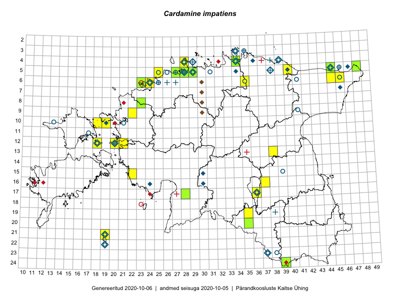

Cardamine impatiens — mets-jürilill
Brassicaceae :: Cardamine impatiens L. (221)

Kaart põhineb 225 kirjel:
vaatlusi 81
herbaareksemplare 140
ELFi kirjeid1 4
Taime kaasaegsed ja ajaloolised leiukohad asuvad 59 ruudus.
Tingmärgid ja ruutude arvud periooditi (U2 / V3 )
█ 2006–2020 (29/–)
◆/◇ 1971–2005 (23/30)
○ 1921–1970 (30/16)
+ kuni 1920 (12/5)
× hävinud (–/0)
? kaheldav (–/0)
| Ruut | Leidja(d) | Leiuaeg | Kirje |
|---|---|---|---|
| 10-13 | Haide-Ene Rebassoo | 1957–1984 | ruut/ala: Cardamine impatiens L. |
| 11-17 | Haide-Ene Rebassoo | 1957–1984 | ruut/ala: Cardamine impatiens L. |
| 12-18 | Haide-Ene Rebassoo | 1957–1984 | ruut/ala: Cardamine impatiens L. |
| 05-45 | Tõnu Ploompuu | 1985-07 | ruut/ala: Cardamine impatiens L. |
| 05-47 | botaaniline ekspeditsioon ZBI | 1982-07-10 | ruut/ala: Cardamine impatiens L. |
| 06-41 | Kalju Pork, L. Lamp | 1953 | ruut/ala: Cardamine impatiens L. |
| 07-46 | botaaniline ekspeditsioon ZBI | 1982-07-16 | ruut/ala: Cardamine impatiens L. |
| 03-35 | Gustav Vilbaste | 1933 | ruut/ala: Cardamine impatiens L. |
| 04-29 | Vilma Kuusk, Heljo Krall | 1999-06-26 | ruut/ala: Cardamine impatiens L. |
| 04-34 | 1974–1976 | ruut/ala: Cardamine impatiens L. | |
| 03-35 | J. Eplik | 1935-06 | ruut/ala: Cardamine impatiens L. |
| 04-36 | 1974–1977 | ruut/ala: Cardamine impatiens L. | |
| 05-38 | botaaniline ekspeditsioon ZBI | 1982-07-17–1982-07-18 | ruut/ala: Cardamine impatiens L. |
| 05-40 | botaaniline ekspeditsioon ZBI | 1982-07-20 | ruut/ala: Cardamine impatiens L. |
| 23-37 | T. Kukk | 1999-06-05 | ruut/ala: Cardamine impatiens L. |
| 12-18 | H. Rebassoo | 1957–1972 | ruut/ala: Cardamine impatiens L. |
| 12-20 | 1983-07-13 | ruut/ala: Cardamine impatiens L. | |
| 17-36 | Helle Mäemets | 1986-06–1987 | ruut/ala: Cardamine impatiens L. |
| 16-24 | M. Leht, M. Abakumova | 1982-08-05 | ruut/ala: Cardamine impatiens L. |
| 16-30 | T. Kull, K. Kull | 1983-07-06–1986 | ruut/ala: Cardamine impatiens L. |
| 05-34 | M. Kask | 1975-07-30–1975-08-01 | ruut/ala: Cardamine impatiens L. |
| 04-39 | 1982-07-19 | ruut/ala: Cardamine impatiens L. | |
| 21-19 | Haide-Ene Rebassoo | 1979-07-02–1979-07-05 | ruut/ala: Cardamine impatiens L. |
| 21-19 | TRÜ tudengid, Hans Trass, Aino Kalda | 1961-07–1961-07-11 | ruut/ala: Cardamine impatiens L. |
| 21-19 | Julius Gröntved | 1929 | ruut/ala: Cardamine impatiens L. |
| 04-28 | Haide-Ene Rebassoo | 1973-06-06 | ruut/ala: Cardamine impatiens L. |
| 12-20 | H.-E. Rebassoo | 1966-08-12 | ruut/ala: Cardamine impatiens L. |
| 05-28 | H. Salasoo, J. Rebane | 1934–1938 | ruut/ala: Cardamine impatiens L. |
| 10-19 | Toomas Kukk, Elle Roosaluste | 1993-06–1998-05-31 | ruut/ala: Cardamine impatiens L. |
| 10-19 | Toomas Kukk, Illi Tarmu | 1992-07-16 | ruut/ala: Cardamine impatiens L. |
| 12-20 | Ott Luuk | 2014-07-24–2014-07-28 | ruut/ala: Cardamine impatiens L. |
| 12-21 | Tiit Hallikma, Toomas Kukk | 2015-08-27 | ruut/ala: Cardamine impatiens L. |
| 12-21 | Tiit Hallikma, Toomas Kukk | 2015-08-25 | ruut/ala: Cardamine impatiens L. |
| 20-35 | Ott Luuk, Hannes Pehlak | 2015-06-12 | ruut/ala: Cardamine impatiens L. |
| 05-48 | Meeli Mesipuu, Timo Luhamäe | 2015-07-23 | ruut/ala: Cardamine impatiens L. |
| 05-28 | Erkki Otsman, Sergei Smirnov | 2015-06-26–2015-06-30 | ruut/ala: Cardamine impatiens L. |
| 13-38 | Ülle Jõgar, Illi Tarmu, Kai Rünk | 2015-07-03 | ruut/ala: Cardamine impatiens L. |
| 19-35 | Kai Rünk, Ülle Jõgar, Illi Tarmu | 2015-05-16 | ruut/ala: Cardamine impatiens L. |
| 19-35 | Kai Rünk, Ülle Jõgar, Illi Tarmu | 2015-05-16 | ruut/ala: Cardamine impatiens L. |
| 05-28 | Erkki Otsman, Sergei Smirnov | 2015-06-29–2015-07-06 | ruut/ala: Cardamine impatiens L. |
| 05-45 | Meeli Mesipuu | 2015-06-01 | ruut/ala: Cardamine impatiens L. |
| 05-25 | Mari Metsoja, Jaak-Albert Metsoja | 2015-07-30 | ruut/ala: Cardamine impatiens L. |
| 05-48 | Timo Luhamäe, Meeli Mesipuu | 2015-07-23 | ruut/ala: Cardamine impatiens L. |
| 17-36 | Helle Mäemets, Mare Leis, Malle Timm | 2015-06-25 | ruut/ala: Cardamine impatiens L. |
| 13-38 | Ülle Jõgar, Illi Tarmu, Kai Rünk | 2015-07-23 | ruut/ala: Cardamine impatiens L. |
| 05-29 | Tiina Elvisto, Kadi-Liis Kesler | 2015-05-12 | ruut/ala: Cardamine impatiens L. |
| 06-35 | Ott Luuk, Tiit Hallikma | 2016-05-20 | ruut/ala: Cardamine impatiens L. |
| 05-40 | Ott Luuk, Tiit Hallikma | 2016-05-20 | ruut/ala: Cardamine impatiens L. |
| 05-40 | Tiit Hallikma, Ott Luuk | 2016-05-20 | ruut/ala: Cardamine impatiens L. |
| 06-35 | Tiit Hallikma, Ott Luuk | 2016-05-20 | ruut/ala: Cardamine impatiens L. |
| 09-22 | Tõnu Ploompuu | 2015-07-14–2015-08-22 | ruut/ala: Cardamine impatiens L. |
| 10-18 | Toomas Kukk, Sander Laherand | 2016-07-07 | ruut/ala: Cardamine impatiens L. |
| 10-18 | Sander Laherand, Toomas Kukk | 2016-07-07 | ruut/ala: Cardamine impatiens L. |
| 15-22 | Sirje Azarov, Meeli Mesipuu | 2016-07-04 | ruut/ala: Cardamine impatiens L. |
| 21-19 | Meeli Mesipuu, Ott Luuk | 2016-09-10 | ruut/ala: Cardamine impatiens L. |
| 21-19 | Ott Luuk, Meeli Mesipuu | 2016-09-10 | ruut/ala: Cardamine impatiens L. |
| 15-22 | Meeli Mesipuu, Sirje Azarov | 2016-07-04 | ruut/ala: Cardamine impatiens L. |
| 06-46 | Kadi-Liis Kesler, Tiina Elvisto | 2015-07-30 | ruut/ala: Cardamine impatiens L. |
| 04-28 | Tiina Elvisto, Maria Ksenofontov | 2015-08-09 | ruut/ala: Cardamine impatiens L. |
| 17-28 | Indrek Tammekänd, Raivo Endrekson | 2016-06-12 | ruut/ala: Cardamine impatiens L. |
| 24-39 | Indrek Tammekänd | 2016-06-18 | ruut/ala: Cardamine impatiens L. |
| 06-46 | Kadi-Liis Kesler, Tiina Elvisto | 2015-07-30 | ruut/ala: Cardamine impatiens L. |
| 12-20 | Toomas Kukk, Katrin Jürgens | 2007-08-10–2007-08-12 | ruut/ala: Cardamine impatiens L. |
| 06-45 | Tõnu Ploompuu | 2017-05-13 | ruut/ala: Cardamine impatiens L. |
| 06-45 | Tõnu Ploompuu | 2017-05-13 | ruut/ala: Cardamine impatiens L. |
| 12-18 | Peedu Saar, Ilmar Uibopuu | 2017-06-15 | ruut/ala: Cardamine impatiens L. |
| 12-18 | Peedu Saar, Ilmar Uibopuu | 2017-06-15 | ruut/ala: Cardamine impatiens L. |
| 12-18 | Peedu Saar, Ilmar Uibopuu | 2017-06-15 | ruut/ala: Cardamine impatiens L. |
| 16-37 | Meeli Mesipuu | 2017-07-27 | ruut/ala: Cardamine impatiens L. |
| 16-37 | Meeli Mesipuu | 2017-07-27 | ruut/ala: Cardamine impatiens L. |
| 12-18 | Toomas Kukk, Peeter Pärn | 2017-09-09–2017-09-10 | ruut/ala: Cardamine impatiens L. |
| 05-27 | Ranno Puumets | 2017-09-01 | ruut/ala: Cardamine impatiens L. |
| 10-19 | Mari Reitalu, Mare Leis | 2007-07-24 | ruut/ala: Cardamine impatiens L. |
| 06-24 | Rein Kalamees | 2017-07-06 | ruut/ala: Cardamine impatiens L. |
| 17-36 | Meeli Mesipuu | 2015-08-16 | ruut/ala: Cardamine impatiens L. |
| 10-19 | Peedu Saar, Toomas Kukk | 2019-09-18 | ruut/ala: Cardamine impatiens L. |
| 10-19 | Toomas Kukk, Peedu Saar | 2019-09-18 | ruut/ala: Cardamine impatiens L. |
| 09-22 | Ott Luuk | 2019-09-04 | ruut/ala: Cardamine impatiens L. |
| 09-22 | Ott Luuk | 2019-09-03–2019-09-04 | ruut/ala: Cardamine impatiens L. |
| 12-18 | Toomas Kukk, Ott Luuk, Peeter Pärn | 2020-05-29–2020-05-31 | ruut/ala: Cardamine impatiens L. |
| 12-18 | Toomas Kukk, Ott Luuk | 2020-05-29 | ruut/ala: Cardamine impatiens L. |
| 06-24 | O. Abner | 1993-09-16 | TALL C001112: Cardamine impatiens L. |
| 04-34 | Silvia Krastin | 1958-06-30 | TAA0029072: Cardamine impatiens L. |
| 04-34 | Silvia Krastin | 1958-06-30 | TAA0029073: Cardamine impatiens L. |
| 23-37 | Maret Kask, Salme Kask | 1957-08-09 | TAA0029080: Cardamine impatiens L. |
| 23-37 | Maret Kask, Salme Kask | 1957-08-09 | TAA0029081: Cardamine impatiens L. |
| 21-19 | Maret Kask | 1973-06-08 | TAA0029089: Cardamine impatiens L. |
| 22-19 | Linda Viljasoo | 1972-09-19 | TAA0029090: Cardamine impatiens L. |
| 09-41 | Laura Pihlapuu | 1963-06-25 | TAA0029091: Cardamine impatiens L. |
| 06-35 | Salme Kask | 1958-08-11 | TAA0029093: Cardamine impatiens L. |
| 04-34 | Linda Viljasoo, Agnes Ojaveer | 1958-06-30 | TAA0029094: Cardamine impatiens L. |
| 04-34 | Maret Kask | 1958-06-30 | TAA0029095: Cardamine impatiens L. |
| 04-34 | Maret Kask | 1958-06-30 | TAA0029096: Cardamine impatiens L. |
| 05-28 | Johannes Talts | 1929-06-17 | TAA0029097: Cardamine impatiens L. |
| 23-37 | Linda Viljasoo | 1957-08-09 | TAA0029104: Cardamine impatiens L. |
| 06-25 | Valter Sirgo | 1934-06-29 | TAA0029105: Cardamine impatiens L. |
| 06-25 | Valter Sirgo | 1934-06-29 | TAA0029106: Cardamine impatiens L. |
| 06-46 | Gustav Vilbaste | 1929-06-17 | TAA0029107: Cardamine impatiens L. |
| 06-46 | Gustav Vilbaste | 1929-06-19 | TAA0029108: Cardamine impatiens L. |
| 21-19 | Gustav Vilbaste | 1932-07-18 | TAA0029109: Cardamine impatiens L. |
| 03-35 | Gustav Vilbaste | 1932-07-06 | TAA0029110: Cardamine impatiens L. |
| 05-46 | Gustav Vilbaste | 1929-06-17 | TAA0029113: Cardamine impatiens L. |
| 06-46 | 1929-06-16 | TAA0029114: Cardamine impatiens L. | |
| 03-34 | Gustav Vilbaste | 1927-08-05 | TAA0029115: Cardamine impatiens L. |
| 04-39 | Gustav Vilbaste | 1925-07-07 | TAA0029116: Cardamine impatiens L. |
| 12-20 | Gustav Vilbaste | 1934-07-07 | TAA0029118: Cardamine impatiens L. |
| 05-31 | Gustav Vilbaste | 1923-07-28 | TAA0029119: Cardamine impatiens L. |
| 06-25 | Vilma Kuusk | 1959-06-02 | TAA0029126: Cardamine impatiens L. |
| 05-28 | R. Lehbert | 1886-06-02 | TAM0061829: Cardamine impatiens L. |
| 05-28 | R. Lehbert | 1900-07-30 | TAM0061831: Cardamine impatiens L. |
| 05-27 | R. Lehbert | 1900-09-03 | TAM0061957: Cardamine impatiens L. |
| 05-28 | R. Lehbert | 1903-08-24 | TAM0061959: Cardamine impatiens L. |
| 03-35 | R. Lehbert | 1908-06-28 | TAM0061962: Cardamine impatiens L. |
| 12-20 | R. Lehbert | 1912-07-06 | TAM0061963: Cardamine impatiens L. |
| 05-27 | R. Lehbert | 1913-06-05 | TAM0061964: Cardamine impatiens L. |
| 05-28 | Erik Sits | 1929-06-20 | TAM0006676: Cardamine impatiens L. |
| 05-28 | Paul W. Thomson | 1921-06-19 | TAM0006677: Cardamine impatiens L. |
| 05-28 | H. Sogenbits | 1926-06-10 | TAM0006678: Cardamine impatiens L. |
| 05-31 | G. Vilberg | 1922-07-21 | TAM0006679: Cardamine impatiens L. |
| 06-25 | Hugo Salasoo | 1934-07-15 | TAM0006680: Cardamine impatiens L. |
| 06-24 | J.-M. Lepp | 1994-07-28 | TAM0006839: Cardamine impatiens L. |
| 05-28 | E. Peikel | 1952-06-21 | TAM0006840: Cardamine impatiens L. |
| 05-28 | E. Peikel | 1952-06-21 | TAM0006841: Cardamine impatiens L. |
| 06-25 | Õie Jaagomäe | 1967-06-28 | TAM0006842: Cardamine impatiens L. |
| 04-28 | Õie Jaagomäe | 1963-06-11 | TAM0006843: Cardamine impatiens L. |
| 04-28 | Õie Jaagomäe | 1963-06-11 | TAM0006844: Cardamine impatiens L. |
| 06-25 | V. Sirgo | 1934-06-29 | TAM0066825: Cardamine impatiens L. |
| 03-35 | R. Lehbert | 1921-08-02 | TAM0066990: Cardamine impatiens L. |
| 03-35 | R. Lehbert | 1921-08-02 | TAM0066997: Cardamine impatiens L. |
| 03-35 | R. Lehbert | 1921-08-02 | TAM0067001: Cardamine impatiens L. |
| 06-24 | T. Lodjak | 1995-07-03 | TAM0073648: Cardamine impatiens L. |
| 21-19 | Urmas Laansoo | 1997-06-26 | TALL C004533: Cardamine impatiens L. |
| 06-27 | Glehn | 1856-06-19 | TAM0099044: Cardamine impatiens L. |
| 05-28 | Th. Frese | 1805-06-13–1866-09-01 | TAM0099045: Cardamine impatiens L. |
| 05-28 | TAM0099046: Cardamine impatiens L. | ||
| 05-28 | G. Pahnsch | 1879-06-25 | TAM0099048: Cardamine impatiens L. |
| 05-28 | G. Pahnsch | 1879-06-25 | TAM0099049: Cardamine impatiens L. |
| 05-28 | TAM0099051: Cardamine impatiens L. | ||
| 05-46 | Weber, Seidlitz | TAM0099052: Cardamine impatiens L. | |
| 05-28 | G. Pahnsch | 1875-06-14 | TAM0099053: Cardamine impatiens L. |
| 05-28 | G. Pahnsch | 1842-01-19–1880-03-26 | TAM0099055: Cardamine impatiens L. |
| 06-25 | H. Winkler | 1890-05-22 | TAM0099059: Cardamine impatiens L. |
| 06-26 | A. Dietrich | 1862 | TAM0099060: Cardamine impatiens L. |
| 08-23 | Ott Luuk | 2012-06-01 | TAA0116734: Cardamine impatiens L. |
| 21-19 | Mare Liik, Urmas Laansoo | 2004-08-23 | TALL C010824: Cardamine impatiens L. |
| 15-30 | Mare Toom, Mare Leis | 1984-07-10 | TAA0112646: Cardamine impatiens L. |
| 05-28 | Jana-Maria Habicht | 2016-06-20 | TAM0131708: Cardamine impatiens L. |
| 05-28 | Jana-Maria Habicht | 2016-06-20 | TAM0131709: Cardamine impatiens L. |
| 05-26 | P. Kochtitsky | 1933-06-29 | TAA0114180: Cardamine impatiens L. |
| 24-39 | Maret Gerz, Liina Oja | 2016-06-14 | TAA0133748: Cardamine impatiens L. |
| 17-28 | Indrek Tammekänd, Raivo Endrekson | 2016-06-12 | TAA0139875: Cardamine impatiens L. |
| 24-39 | Indrek Tammekänd | 2013-06-18 | TAA0139840: Cardamine impatiens L. |
| 05-45 | Taimi Paal | 2015-06-17 | TAA0119833: Cardamine impatiens L. |
| 05-45 | Meeli Mesipuu | 2015-06-01 | TAA0140844: Cardamine impatiens L. |
| 05-45 | Meeli Mesipuu | 2015-06-01 | TAA0140846: Cardamine impatiens L. |
| 06-23 | Toomas Kukk | 2017-07-27 | TAA0142030: Cardamine impatiens L. |
| 06-23 | Toomas Kukk | 2017-07-27 | TAA0142031: Cardamine impatiens L. |
| 05-48 | Meeli Mesipuu, Timo Luhamäe | 2015-07-23 | TAA0143933: Cardamine impatiens L. |
| 06-23 | Peedu Saar | 2018-07-05 | TAA0146764: Cardamine impatiens L. |
| 20-35 | Ott Luuk, Hannes Pehlak | 2015-06-12 | TAA0145857: Cardamine impatiens L. |
| 05-29 | Thea Kull | 2019-06-12 | TAA0148048: Cardamine impatiens L. |
| 04-34 | Leida Karu, Visolde Puusepp | 1958-06-27 | TAA0029082: Cardamine impatiens L. |
| 04-34 | Leida Karu, Visolde Puusepp | 1958-06-27 | TAA0029083: Cardamine impatiens L. |
| 06-24 | Vilma Kuusk | 1959-06-01 | TAA0029084: Cardamine impatiens L. |
| 06-24 | Vilma Kuusk | 1959-06-01 | TAA0029085: Cardamine impatiens L. |
| 10-21 | Vilma Kuusk | 1970-07-21 | TAA0029086: Cardamine impatiens L. |
| 04-29 | Vilma Kuusk | 1999-06-26 | TAA0029087: Cardamine impatiens L. |
| 04-29 | Vilma Kuusk | 1999-06-26 | TAA0029088: Cardamine impatiens L. |
| 05-45 | Peeter Põldmaa | 1959-06-14 | TAA0029092: Cardamine impatiens L. |
| 05-29 | Toomas Kukk | 1988-07-18 | TAA0029098: Cardamine impatiens L. |
| 05-28 | Silvia Krastin | 1934-06-22 | TAA0029099: Cardamine impatiens L. |
| 05-28 | Silvia Krastin | 1934-06-22 | TAA0029100: Cardamine impatiens L. |
| 05-28 | Silvia Krastin | 1934-06-22 | TAA0029101: Cardamine impatiens L. |
| 05-28 | Johannes Talts | 1934-06-22 | TAA0029102: Cardamine impatiens L. |
| 15-39 | Zinaida Izvekova | 1947-07-09 | TAA0029103: Cardamine impatiens L. |
| 06-35 | Gustav Vilbaste | 1932-07-04 | TAA0029111: Cardamine impatiens L. |
| 10-21 | Gustav Vilbaste | 1934-08-11 | TAA0029117: Cardamine impatiens L. |
| 05-31 | Gustav Vilbaste | 1923-07-21 | TAA0029120: Cardamine impatiens L. |
| 05-28 | Silvia Krastin | 1934-06-21 | TAA0029121: Cardamine impatiens L. |
| 23-38 | Vilma Kuusk | 1964-07-24 | TAA0029122: Cardamine impatiens L. |
| 05-25 | Vilma Kuusk, Kai Lang, Ants Lõhmus | 1960-08-11 | TAA0029123: Cardamine impatiens L. |
| 05-25 | Vilma Kuusk, Kai Lang, Ants Lõhmus | 1960-08-11 | TAA0029124: Cardamine impatiens L. |
| 12-20 | Haide-Ene Rebassoo | 1956-07-18 | TAA0029125: Cardamine impatiens L. |
| 05-28 | Silvia Krastin | 1934-06-22 | TAA0029127: Cardamine impatiens L. |
| 05-28 | Silvia Krastin | 1934-06-22 | TAA0029128: Cardamine impatiens L. |
| 05-45 | Heinrich Aasamaa | 1988-06-27 | TAM0055780: Cardamine impatiens L. |
| 05-38 | R. Lehbert | 1903-07-11 | TAM0061958: Cardamine impatiens L. |
| 04-38 | R. Lehbert | 1905-07-03 | TAM0061961: Cardamine impatiens L. |
| 12-18 | E. Tammemägi | 1971-06-15 | TU356299: Cardamine impatiens L. |
| 05-27 | L. Pihlapuu | 1964-06-26 | TU356300: Cardamine impatiens L. |
| 09-41 | L. Pihlapuu | 1963-06-25 | TU356301: Cardamine impatiens L. |
| 09-41 | L. Pihlapuu | 1963-06-25 | TU356302: Cardamine impatiens L. |
| 05-27 | L. Pihlapuu | 1964-06-26 | TU356307: Cardamine impatiens L. |
| 21-19 | 1961-07-08 | TU356308: Cardamine impatiens L. | |
| 22-19 | E. Lellep | 1961-07-11 | TU356309: Cardamine impatiens L. |
| 21-19 | 1961-07-09 | TU356310: Cardamine impatiens L. | |
| 16-30 | 1989-07-12 | TU356311: Cardamine impatiens L. | |
| 04-28 | E. Tammemägi | 1971-06-17 | TU356315: Cardamine impatiens L. |
| 04-28 | E. Tammemägi | 1971-06-17 | TU356316: Cardamine impatiens L. |
| 21-19 | E. Lellep | 1961-07-07 | TU356317: Cardamine impatiens L. |
| 21-19 | E. Lellep | 1961-07-08 | TU356318: Cardamine impatiens L. |
| 04-34 | J. Eplik | 1935-06-26 | TU356319: Cardamine impatiens L. |
| 05-28 | S. Talts | 1934-06-21 | TU356321: Cardamine impatiens L. |
| 09-41 | L. Pihlapuu | 1963-06-25 | TU356323: Cardamine impatiens L. |
| 05-28 | K. Eichwald | 1930-06-27 | TU356326: Cardamine impatiens L. |
| 05-29 | 1943-06-19 | TU356327: Cardamine impatiens L. | |
| 12-18 | A. Kalda | 1957-07-14 | TU356328: Cardamine impatiens L. |
| 12-18 | E. Lellep | 1957-07-14 | TU356329: Cardamine impatiens L. |
| 21-19 | Elmar Lepik | 1934-06-15 | TU356330: Cardamine impatiens L. |
| 23-37 | E. Saarson | 1927-06-15 | TU356331: Cardamine impatiens L. |
| 19-38 | H. Hiir | 1902-06 | TU356332: Cardamine impatiens L. |
| 17-36 | H. Freimann | 1923-09-15 | TU356333: Cardamine impatiens L. |
| 04-39 | G. Mechmenhausen | 1924-07-28 | TU356334: Cardamine impatiens L. |
| 12-20 | B. Fromhold-Treu | 1934-06-30 | TU356335: Cardamine impatiens L. |
| 12-20 | E. Lellep | 1961-07-31 | TU356336: Cardamine impatiens L. |
| 05-28 | Jul. Lunts | 1933-06-21 | TU356337: Cardamine impatiens L. |
| 05-28 | Julius Lunts | 1933 | TAM0090906: Cardamine impatiens L. |
| 04-29 | P. Glehn | 1835-11-08–1876-04-16 | TAM0099026: Cardamine impatiens L. |
| 04-29 | 1863 | TAM0099037: Cardamine impatiens L. | |
| 05-28 | Paul Wasmuth | 1900-06-19 | TAM0126736: Cardamine impatiens L. |
| 05-27 | Jaak Ruubel | 1930 | TAM0129592: Cardamine impatiens L. |
| 06-30;07-30 | Arne Kivistik | 1997-06-12 | ELF: 1208 |
| 08-30;09-30 | Arne Kivistik | 1997-06-20 | ELF: 934 |
| 23-37 | Pille Tomson, Eerik Leibak | 2001-06-10 | ELF: 5194 |
| 23-37 | Pille Tomson, Eerik Leibak | 2001-06-10 | ELF: 7314 |
Eestimaa Looduse Fondi (ELF) andmebaas sisaldab inventeeritud koosluste kirjeldusi ja liigiloendeid. Eriti rohkesti on andmeid märgalade kohta.↩︎
Ruutude arv uue atlase andmekogu järgi. Muuhulgas arvestab vanemat herbaariumi, 2005. aasta atlase välitöölehtedelt uuesti digitaliseeritud andmeid jne. Uue atlase andmekogust pärinevad andmed on kaardile kantud siniste sümbolitega.↩︎
Ruutude arv 2005. aasta atlase (Kukk, T., Kull, T., Eesti taimede levikuatlas. Eesti Maaülikool, Põllumajandus- ja Keskkonnainstituut, Tartu, 2005) järgi. Andmeallikana on kasutatud levik.exe programmi, kus igas ruudus on registreeritud vaid uusim leid. Seetõttu on vanemate perioodide kohta andmed puudulikud. Kasutatud levik.exe andmestikus leidub mõningaid kõrvalekaldeid atlase trükis ilmunud versioonist, sagedamini tarnade ja käpaliste seas. Lisaks leidub selles andmestikus valik liike (peamiselt väheste leidudega tulnuktaimed), mille kaarte trükis ei avaldatud. Vana atlase andmed ruutudest, milles ei ole uue atlase andmekogus leide enne 2006. aastat, on kaardil esitatud punaste sümbolitega. Vana atlase andmetel hävinud ja kaheldavaid leiukohti pole hilisemate (taas)leidude põhjal korrigeeritud.↩︎